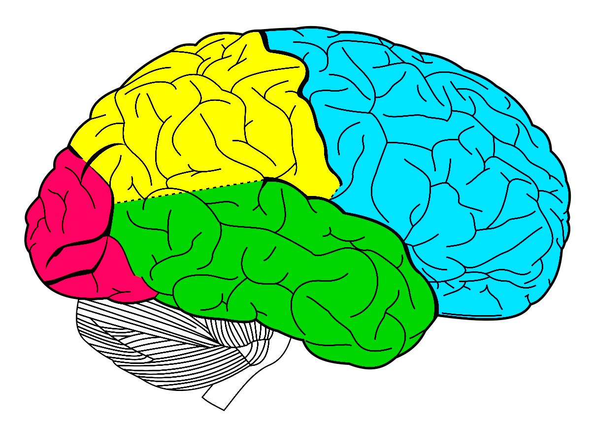

- homepage
- competences
- research
- publications
- education
- neuroscience
- psychology
- éducation
- citations
- glossary
- links
- contact
|
|
|
Research interests
|

Neurosciences |
|
Robotics |
|
|
L’homme est une machine si composée qu’il est impossible de s’en faire une idée claire, et conséquemment de la définir (La Mettrie, 1748/1912). La Mettrie, J. O. de (1748/1912). L’homme machine. Leyden. |
|
History
Ajouter une citation.
History of Science
Ajouter du texte.
History of Medicine
Ajouter du texte.
History of Psychology
Ajouter du texte.
History of Education
Ajouter du texte.
Philosophy
Ajouter du texte.
Philosophy of Science
Ajouter du texte.
Philosophy of Medicine
Ajouter du texte.
Philosophy of Psychology
Ajouter du texte.
Philosophy of Education
Ajouter du texte.
Philosophy of Science
Ajouter du texte.
Medicine
Ajouter du texte.
Theories
Ajouter du texte.
Models
Ajouter du texte.
Methods
Ajouter du texte.
Programs
Ajouter du texte.
Assessment
Ajouter du texte.
Neuroscience
Ajouter une citation.
Theories
Ajouter du texte.
Models
Ajouter du texte.
Methods
Ajouter du texte.
Programs
Ajouter du texte.
Assessment
Ajouter du texte.
Psychology
Ajouter une citation.
Theories
Ajouter du texte.
Models
Ajouter du texte.
Methods
Ajouter du texte.
Programs
Ajouter du texte.
Assessment
Ajouter du texte.
Cognitive architecture
1. ARCHITECTURES COGNITIVES
1.1. INTRODUCTION
La cognition regroupe l’ensemble des facultés cognitives dont est doté l’esprit humain. Les facultés cognitives recouvrent la perception, l’attention, l’apprentissage, la mémoire, le langage, la résolution de problème, la prise de décision et le contrôle moteur. En psychologie cognitive, et plus largement, en sciences cognitives, les facultés cognitives sont appréhendées en termes de procédures computationnelles opérant sur des structures représentationnelles symboliques de l’état et du comportement du monde extérieur (Haugland, 1982 ; Marr, 1977 ; Minsky, 1975 ; Newell, & Simon, 1976 ; Pylyshyn, 1984 ; Turing, 1950). Les facultés cognitives ont pour finalité de favoriser l’interaction appropriée, adaptative, anticipative et effective entre le système cognitif humain et son environnement (Hollnagel, & Woods, 1999). Les théories unifiées de la cognition tentent d’expliquer les détails de tous les processus cognitifs et des comportements humains (Anderson, 1983 ; Anderson, & Lebiere, 1998 ; Laird, Newell, & Rosenbloom, 1987 ; Langley, Laird, & Rogers, 2009 ; Newell, 1990). Ainsi, les théories unifiées de la cognition devraient permettre de reproduire et d’expliquer l’ensemble des résultats empiriques précédemment obtenus en psychologie cognitive. Dans son ouvrage intitulé Unified Theories of Cognition, Newell (1990) proposait que l’état de l’art actuel de la psychologie cognitive pouvait soutenir de telles théories et affirmait même que le temps est venu pour que la psychologie cognitive cesse de recueillir, d’observer et d’analyser des phénomènes empiriques déconnectés et commence sérieusement à considérer l’unification théorique sous la forme de modèles de simulation informatique. Pour affirmer une théorie unifiée de la cognition, nous devons proposer les mécanismes par lesquels les résultats empiriques peuvent être reproduits. Or, la conception et la simulation de tels mécanismes cognitifs impliquent la conception d’une architecture cognitive reflétant l’organisation hiérarchique et modulaire des processus cognitifs et des comportements humains. Une architecture cognitive définit la structure et les processus globaux et essentiels d’un modèle cognitif computationnel générique, utilisés pour l’analyse de la cognition et du comportement (Langley, Laird, & Rogers, 2009 ; Newell, 1990 ; Sun, 2004). Depuis le développement de deux architectures cognitives pionnières, le modèle General Problem Solver (GPS) (Newell, & Simon, 1963) et le modèle Model Human Processor (MHP) (Carbonell, 1966 ; Card, Moran, & Newell, 1983), plusieurs architectures cognitives ont été développées. Parmi les plus influentes dans la littérature, nous pouvons citer : – le modèle States, Operators, And Reasoning (Soar) (Laird, Newell, & Rosenbloom, 1987 ; Newell, 1990), – le modèle Capacity-constrained collaborative Activation-based Production System (CAPS) (Just, & Carpenter, 1992 ; Just, & Varma, 1999 ; Just, & Varma, 2007), – le modèle Connectionist Learning with Adaptive Rule Induction Online (CLARION) (Sun, 1994, 2002, 2006 ; Sun, Slusarz, & Terry, 2005 ; Sun, Merrill & Peterson, 2001), – le modèle Queueing Network-Model Human Processor (QN-MHP) (Liu, 1996, 1997 ; Liu, Feyen, & Tsimhoni, 2006) (voir Sous-section 3.4.3), – le modèle Executive-Process Interactive Control (EPIC) (Meyer, & Kieras, 1997a, 1997b) (voir Sous-section 3.4.2), – et le modèle Adaptative Control of Thought-Rational (ACT-R) (Anderson, 1983 ; Anderson, 1996 ; Anderson, & Lebiere, 1998 ; Anderson et al., 2004a) (voir Section 1.3). De telles architectures cognitives traitent des processus composants de la cognition humaine dans une conception structuraliste et fonctionnaliste. Elles ont pour fonction de fournir un cadre essentiel pour faciliter la modélisation et la compréhension des divers processus composants de la cognition humaine. Par conséquent, elles peuvent être considérées comme des tentatives pour créer des théories unifiées de la cognition ou comme des implémentations des théories unifiées de la cognition (Anderson et al., 2004 ; Langley, Laird, & Rogers, 2009 ; Newell, 1990). Dans les Sections suivantes, nous présentons les propriétés des architectures cognitives, une architecture cognitive particulière c'est-à-dire le modèle ACT-R (Anderson et al., 2004a) et les relations entre les architectures cognitives, les modèles cognitifs computationnels et les différences individuelles.
1.2. PROPRIETES DES ARCHITECTURES COGNITIVES
1.2.1. REPRESENTATION DES CONNAISSANCES
L’architecture cognitive présente une forme particulière de représentation de la connaissance, des modules mnésiques dans lesquels les connaissances sont stockées et certains processus cognitifs qui opèrent sur ces modules mnésiques. L’architecture cognitive intègre habituellement la distinction entre la mémoire déclarative et la mémoire procédurale (Schacter, & Tulving, 1994 ; Squire, 1987 ; Squire, & Knowlton, 2000 ; Squire, & Zola, 1996). Elle peut également intégrer la distinction entre la mémoire sémantique et la mémoire épisodique (Tulving, 1983, 1984). Elle peut aussi intégrer des processus méta-cognitifs (Sun, Zhang, & Mathews, 2006). Il existe une grande variété de formalisme représentationnel de la connaissance (Langley, Laird, & Rogers, 2009 ; Sun, 2008 ; Vernon, Metta, & Sandini, 2007). La représentation de la connaissance déclarative peut être formalisée par les réseaux sémantiques (Ali, & Shapiro, 1993 ; Sowa, 1991) ou par la logique de premier ordre (Genesereth, & Nilsson, 1987). Et la représentation de la connaissance procédurale peut être formalisée par les systèmes de production (Neches, Langley, & Klahr, 1987), par les frames (Minsky, 1975), par les schémas (Arbib, 1992) ou par les plans (Hendler, Tate, & Drummond, 1990). Néanmoins, la représentation de la connaissance déclarative est souvent formalisée par des modèles cognitifs computationnels basés sur la logique formelle (voir la revue de Bringsjord, 2008). La représentation de la connaissance procédurale est souvent formalisée par des modèles cognitifs computationnels basés sur les systèmes de production (voir la revue de Taatgen, & Anderson, 2008). De plus, la représentation de la connaissance peut également être formalisée par des réseaux connectionnistes, aussi appelés les réseaux neuronaux artificiels (voir la revue de Thomas, & McClelland, 2008), par des systèmes dynamiques (voir la revue de Schöner, 2008) et par des réseaux bayésiens (voir la revue de Griffiths, Kemp, & Tenenbaum, 2008). 1.2.2. ORGANISATION DES CONNAISSANCES L’architecture cognitive présente une organisation à la fois hiérarchique et modulaire. L’organisation hiérarchique de l’architecture cognitive réfère à la hiérarchie des différents niveaux cognitifs (Minsky, 1986 ; Newell, 1990 ; Simon, 1962). Un niveau cognitif est un assemblage de composants cognitifs liés entre eux dans une certaine configuration et interactifs, afin de produire un comportement à ce niveau cognitif. Dans la hiérarchie de niveaux cognitifs, le comportement produit à un niveau cognitif supérieur se propage au niveau cognitif inférieur et ainsi de suite pour chaque niveau cognitif successif. L’organisation modulaire de l’architecture cognitive réfère à la modularité des différents composants cognitifs fonctionnels (Barrett, 2005 ; Barrett, & Kurzban, 2006 ; Carruthers, 2006 ; Fodor, 1983, 2000 ; Minsky, 1986 ; Newell, 1990 ; Samuels, 2005 ; Shallice, 1988). Un composant cognitif fonctionnel est un module cognitif fonctionnellement distinct des autres modules cognitifs. Dans l’organisation modulaire de l’achitecture cognitive, un composant cognitif fonctionnel est toujours connecté à d’autres composants cognitifs fonctionnels. Ainsi, l’organisation hiérarchique et modulaire de l’architecture cognitive implique de considérer à la fois la nature verticale et la nature horizontale de son organisation. Chaque niveau cognitif peut être subdivisé en composants cognitifs fonctionnels. 1.2.3. UTILISATION DES CONNAISSANCES L’architecture cognitive présente une forme particulière d’utilisation de la connaissance. L’architecture cognitive peut intégrer plusieurs dichotomies fondamentales entre les différents processus cognitifs qui utilisent les connaissances. Premièrement, l’architecture cognitive peut intègrer la dichotomie fondamentale entre les traitements sériels et les traitements parallèles (Townsend, 1972, 1974 ; Treisman, & Gelade, 1980). Secondement, l’architecture cognitive peut intègrer la dichotomie fondamentale entre les processus automatiques et les processus contrôlés (Egeth, & Yantis, 1997 ; Hirshman, 2004 ; Laberge, & Samuels, 1974 ; Norman, & Shallice, 1986 ; Posner, & Snyder, 1975 ; Schneider, & Chein, 2003 ; Schneider, & Shiffrin, 1977 ; Shiffrin, & Schneider, 1977 ; Yantis, & Jonides, 1984, 1990). Troisièmement, l’architecture cognitive peut intégrer la dichotomie fondamentale entre les processus d’inférence déductive et les processus d’inférence inductive (Evans, Newstead, & Byrne, 1993 ; Evans, & Over, 1996, 2004 ; Goodnwin, & Johnson-Laird, 2005 ; Johnson-Laird, 1983 ; Johnson-Laird, & Byrne, 2002 ; Manktelow, 1999 ; Oberauer, 2006). Quatrièmement, l’architecture cognitive peut intégrer la dichotomie fondamentale entre les processus de contrôle en boucle-fermée et les processus de contrôle en boucle-ouverte (Adams, 1971 ; Keele, 1968 ; Schmidt, 1975 ; Schmidt, & Lee, 2005). 1.3. MODÈLE ACT-R (ANDERSON ET AL., 2004A) Le modèle Adaptative Control of Thought-Rational (ACT-R) développé par Anderson et al. (2004a) est un modèle computationnel symbolique générique de la cognition (Anderson, 1983 ; Anderson, 1996 ; Anderson, & Lebiere, 1998) (Figure 1). Le modèle ACT-R forme une architecture cognitive composée d’un ensemble de modules, chacun étant dévolu au traitement d’un type différent d’information. Le module visuel sert à identifier et à localiser les objets présents dans le champ visuel, le module manuel sert à contrôler les mouvements des mains, le module déclaratif sert à récupérer l’information de la mémoire et le module de but sert à maintenir les buts et les intentions actuels. De plus, le modèle ACT-R comprend un système de production central permettant de coordonner les traitements des différents modules. Par ailleurs, chaque module est associé à des régions corticales distinctes (Anderson et al., 2004a ; Anderson et al., 2004b ; Anderson, Qin, Jung, & Carter, 2007 ; Anderson, Fincham, Qin, & Stocco, 2008). Le modèle ACT-R se compose principalement d’un système perceptivo-moteur, d’un module de but, d’un module de mémoire déclarative et d’une mémoire procédurale. Figure 1. Représentation schématique du modèle ACT-R : DLPFC, cortex préfrontal dorsolatéral ; VLPFC, cortex préfrontal ventrolatéral (Anderson et al., 2004a). L’architecture cognitive ACT-R permet de développer des modèles cognitifs computationnels de l’activité de conduite (Salvucci, Boer, & Liu, 2001 ; Salvucci, 2006) (voir Sous-section 2.3.5), de l’attention sélective visuelle (Salvucci, 2001a) (voir Sous-section 3.2.4), de l’attention partagéé (Byrne, & Anderson, 2001) (voir Sous-section 3.3.6), du contrôle exécutif (Salvucci, 2005 ; Salvucci et Taatgen, 2008) (voir Sous-sections 3.4.4 et 3.4.5) et de la distraction dans l’activité de conduite (Salvucci, 2001b, 2002 ; Salvucci, & Macuga, 2002) (voir Sous-section 4.5.5). 1.4. ARCHITECTURES COGNITIVES, MODELES ET DIFFERENCES INDIVIDUELLES Architectures cognitives et modèles cognitifs computationnels L’architecture cognitive doit être considérée comme un ensemble de théories et d’hypothèses de la cognition humaine, soumis à l’expérimentation et à la validation expérimentale, permettant de déveloper des modèles cognitifs computationnels dans de nombreux domaines de tâches (Sun, 2008, 2009 ; Vernon, Metta, & Sandini, 2007). Ces théories et ces hypothèses peuvent reposer sur des données scientifiques disponibles (par exemple, les données neurobiologiques ou psychologiques), sur des pensées et des arguments philosophiques ou sur des hypothèses de travail appropriées (incluant les hypothèses computationnellement inspirées). Paradoxalement, le développement des modèles cognitifs computationnels est soumis aux multiples contraintes imposées par les théories et les hypothèses initiales sous-jacentes à une architecture cognitive, mais de multiples possibilités de développement peuvent émerger de ces mêmes contraintes (voir la revue de Taatgen, & Anderson, 2008). Par exemple, le développement d’un nouveau modèle peut être limité par l’organisation modulaire de l’architecture cognitive, mais de nombreuses possibilités peuvent également émerger des multiples interactions entre les différents modules. De plus, il est possible de développer un nouveau modèle cognitif computationnel pour un seul module et non pour l’ensemble de l’architecture cognitive (Salvucci, 2005). Modèles cognitifs computationnels et différences individuelles Les modèles cognitifs computationnels tentent de reproduire les processus computationnels internes qui génèrent les activités cognitives humaines. Cependant, un défaut récurrent de ces modèles est de considérer les systèmes cognitifs humains comme des invariants et non comme des sujets humains individuels (Lee, & Webb, 2005). Ce défaut récurrent provient du fait que la validité psychologique d’un modèle cognitif computationnel est évaluée en comparant les données générées par le modèle et les données moyennées ou agrégées entre les sujets humains. Ainsi, la modélisation cognitive suppose qu’il n’existe aucune différence individuelle entre les sujets. Or chaque sujet humain est fondamentalement unique, il est fondamentalement différent des autres. Le bénéfice potentiel des données moyennées tient au fait que, si la performance des sujets est réellement la même excepté le « bruit », le calcul d’une valeur moyenne tendra à supprimer les effets du « bruit » et la valeur moyenne reflètera plus précisément le phénomène psychologique sous-jacent. Cependant, quand la performance des sujets est réellement différente, le calcul de la valeur moyenne produit des données qui ne représentent pas précisément le comportement des sujets et fournit une base erronée pour la modélisation (Ashby, Maddox, Lee, 1994 ; Estes, 1956 ; Estes, & Maddox, 2005 ; Myung, Kim, & Pitt, 2000). Bien que la modélisation des invariants cognitifs soit fondamentale, il est tout autant fondamental de modéliser les différences individuelles. Dans cette perspective, plusieurs chercheurs tentent de dépasser les limitations des modèles cognitifs computationnels en réconciliant deux types d’approches fondamentalement distinctes : l’étude des invariants cognitifs à travers le développement des modèles cognitifs computationnels et l’étude des différences individuelles à travers des données individuelles empiriques (Lee, & Webb, 2005). Ces deux types d’approches pourraient apparaitre comme étant fondamentalement antinomiques, mais elles doivent plutôt être considérées comme étant fondamentalement interdépendantes. En effet, les résultats de quelques études montrent que les différences individuelles permettent de développer les modèles cognitifs computationnels ou bien que les modèles cognitifs computationnels permettent d’expliquer les différences individuelles (Gobet, & Ritter, 2000 ; Jones, Ritter, & Wood, 2000 ; Lee, & Webb, 2005 ; Lewandowsky, & Heit, 2006 ; Webb, & Lee, 2004). Par exemple, certains résultats montrent qu’un modèle cognitif computationnel de la mémoire de travail (Daily, Lovett, & Reder, 2001 ; Just, & Carpenter, 1992 ; Lovett, Daily, & Reder, 2000 ; Lovett, Reder, & Lebiere, 1997, 1999), de la recherche mnésique à court-terme (Chuderski, Stettner, & Orzechowski, 2007), de l’apprentissage catégoriel (Lee, & Webb, 2005) ou de l’acquisition de capacités (Taatgen, 2002) permet d’expliquer certaines différences individuelles. 1.5. CONCLUSION Puisque que la décision d’examiner les fondements théoriques du sujet cognitif à travers les architectures cognitives peut paraître non évidente, il est nécessaire de préciser les raisons pour lesquelles nous avons délibérément pris une telle décision, de récapituler les aspects théoriques majeurs précédemment développés dans ce chapitre et de souligner ceux qui sont au cœur de la thèse développée dans ce document. Premièrement, comme mentionnée précédemment, les architectures cognitives peuvent être considérées comme des implémentations des théories unifiées de la cognition (Anderson et al., 2004 ; Langley, Laird, & Rogers, 2009 ; Newell, 1990). Par conséquent, elles condensent, de manière pertinente, un grand nombre des fondements théoriques fréquemment utilisés dans les recherches de psychologie cognitive parmi lesquels l’organisation modulaire et hiérarchique de la cognition est au cœur de la thèse développée dans ce document. Secondement, comme mentionnée précédemment, les architectures cognitives permettent de développer des modèles cognitifs computationnels dans de nombreux domaines de tâches (Sun, 2008, 2009 ; Vernon, Metta, & Sandini, 2007). Par conséquent, elles s’appliquent, de manière pertinente, à un grand nombre de domaines de tâches ou de fonctions cognitives parmi lesquels l’activité de conduite, l’attention et la distraction sont au centre de la thèse soutenue dans ce document. Troisièmement, comme mentionnée précédemment, certains modèles cognitifs computationnels, basés sur des architectures cognitives, prennent en considération les différences individuelles (Lee, & Webb, 2005). Par conséquent, les architectures cognitives permettent également d’introduire deux types d’approches fondamentalement antinomiques, mais interdépendantes : l’étude des invariants cognitifs et l’étude des différences individuelles. Or, puisque la problématique de la thèse porte sur l’impact des différences individuelles sur la distraction cognitive, ces deux types d’approches sont au centre de la thèse soutenue dans ce document. Dans le Chapitre suivant, nous allons maintenant examiner, plus spécifiquement, les fondements théoriques du sujet cognitif conducteur à travers l’activité de conduite.
Consciousness
AAAAAAAAAAAAA.
Vision
AAAAAAAAAAAAA.
Attention
Attention should not be regarded as an unitary function but rather as a multidimensional function or as an attentional network. Attentional network includes sharing attention, selective attention, and executive control. ......................................................................
2.1. INTRODUCTION Les concepts d’attention et/ou de distraction sont fréquemment employés dans les recherches de psychologie cognitive fondamentale et appliquée (notamment à l’activité de conduite). Pourtant leurs significations ne sont pas toujours formellement explicitées et les processus cognitifs qui leurs sont sous-jacents ne sont pas directement investigués. De telles approximations terminologiques peuvent ainsi aboutir à des conceptions très différentes de l’attention et/ou de la distraction selon les recherches. En effet, le même concept peut recouvrir une multiplicité de significations et de processus cognitifs fondamentalement distincts. De plus, lorsque certains chercheurs tentent justement de définir le concept de distraction, ils invoquent toujours le concept d’attention et de distribution de l’attention. En effet, la distraction est fondamentalement liée au(x) processus associé(s) à la distribution de l’attention et, plus précisément, à l’allocation de l’attention exogène à une activité secondaire et, par conséquent, au détournement de l’attention à l’activité de conduite (voir Chapitre 3 : Distraction dans l’activité de conduite, p. …). Cependant, une telle définition ne permet pas de décrire de manière détaillée le mécanisme de la distraction. Et lorsque certains chercheurs tentent de décrire les processus cognitifs sous-jacents par lesquels la distraction affecte l’activité de conduite, ils invoquent toujours une théorie psychologique spécifique du concept d’attention ou d’un processus attentionnel. Pour ces raisons, il est nécessaire d’expliciter et d’investiguer, de manière rigoureuse, les concepts d’attention et de distraction. Avant d’expliciter et d’investiguer le concept de distraction dans le Chapitre suivant (voir Chapitre 3 : Distraction dans l’activité de conduite, p. …), nous tentons d’expliciter et d’investiguer le concept d’attention dans le présent Chapitre. À première vue, le concept « attention » ne paraît pas problématique. Cela s’explique par le fait que chacun sait ce que le phénomène d’attention signifie. En effet, Every one knows what attention is. It is the taking possession by the mind, in clear and vivid form, of one out of what seem several simultaneously possible objects or trains of thought. Focalization, concentration, of consciousness are of its essence. It implies withdrawal from some things in order to deal effectively with others. (James, 1890/1950, pp. 403-404) Cependant, No one knows what attention is, and … there may even not be an “it” there to be known about (although of course there might be). (Pashler, 1998, p. 1) Les recherches fondamentales en psychologie cognitive montrent que l’attention ne devrait pas être considérée comme une faculté unitaire, mais devrait plutôt être considérée comme un système fonctionnel multidimensionnel recouvrant une multiplicité de processus attentionnels (Allport, 1993 ; Cohen, 1993 ; Desimone, & Duncan, 1995 ; James, 1890/1950 ; Knudsen, 2007 ; Miller, & Cohen, 2001 ; Parasuraman, & Davies, 1984 ; Posner, & Petersen, 1990 ; Posner, & Rothbart, 2007). En effet, Parasuraman et Davies (1984) ou Cohen (1993) suggérent que le système attentionnel se compose de 4 processus attentionnels : l’attention sélective, l’attention partagée, le contrôle attentionnel et l’attention soutenue. De manière différente, Posner et Petersen (1990) proposent, dans le modèle des 3 réseaux attentionnels, que le système attentionnel se compose de 3 processus attentionnels : l’orientation, la détection et l’alerte. Similairement, Posner et coll. proposent, dans le modèle modifié des 3 résaux attentionnels, que le système attentionnel se compose de l’orientation, du contrôle exécutif et de l’alerte (Fan, McCandliss, Sommer, Raz, & Posner, 2002 ; Fan, McCandliss, Fossela, Flombaum, & Posner, 2005 ; Fan, Raz, & Posner, 2003 ; Posner, & Dehaene, 1994, 2000 ; Posner, & Fan, 2007 ; Posner, & Petersen, 1990 ; Posner, & Rothbart, 2007 ; Posner, Sheese, Odludaş, & Tang, 2006 ; Raz, 2004 ; Raz, & Buhle, 2006 ; Wang, Fan, & Johnson, 2004). Les résultats de l’étude de Fan et al. (2002) montrent en effet qu’il n’existe aucune corrélation entre l’orientation, le contrôle exécutif et l’alerte. Ces auteurs concluaient alors que les 3 réseaux attentionnels représentent des constructs fonctionnellement orthogonaux. Ainsi, l’étude de l’attention recouvre l’étude des multiples processus attentionnels composant le système attentionnel. Même si l’étude d’un des processus attentionnels n’implique pas l’exclusion des autres processus attentionnels, l’étude d’un des processus attentionnel implique de recourir à une certaine acception théorique de l’attention. Dans l’étude de l’attention sélective, l’attention est appréhendée en tant que processus de sélection par lequel le sujet humain perçoit et traite plus efficacement les stimuli pertinents que les stimuli non pertinents. Dans l’étude de l’attention partagée, l’attention est appréhendée en tant que processus de partage par lequel le sujet humain partage les ressources attentionnelles entre plusieurs informations. Dans l’étude du contrôle exécutif, l’attention est appréhendée en tant que processus de contrôle par lequel le sujet humain traite et exécute plus efficacement les actions pertinentes que les actions non pertinentes. Dans l’étude de l’attention soutenue, l’attention est appréhendée en tant que processus d’alerte par lequel le sujet humain accomplit plus efficacement et plus durablement une activité lorsqu’il est en état d’alerte ou vigilant que lorsqu’il ne l’est pas. Dans les Sections suivantes, nous présentons successivement des modèles cognitifs computationnels de l’attention sélective visuelle, de l’attention partagée et du contrôle exécutif. 2.2. ATTENTION SELECTIVE 2.2.1. INTRODUCTION Le sujet humain est capable de percevoir une information saillante et/ou pertinente parmi d’autres possibles dans l’environnement (par exemple, regarder sélectivement un visage dans une foule). Cette capacité à percevoir une information saillante et/ou pertinente parmi d’autres possibles implique un processus de sélection de l’information saillante et/ou pertinente parmi d’autres possibles. Dans l’étude de l’attention sélective, l’attention est appréhendée en tant que processus de sélection par lequel le sujet humain perçoit et traite plus efficacement les informations saillantes et/ou pertinentes que les informations non saillantes et/ou non pertinentes (attention pour la perception). Le processus de sélection d’une information saillante et/ou pertinente parmi d’autres implique la facilitation de la perception d’une information pertinente, l’inhibition de la perception des informations non pertinentes (Tipper, 1985) et l’inhibition de retour (Posner, & Cohen, 1984). Les théories majeures de l’attention sélective visuelle incluent notamment les théories suivantes : la théorie du filtre (Broadbent, 1958), la théorie de la pertinence (Deutsch, & Deutsch, 1963), la théorie de l’atténuateur (Treisman, 1964), la théorie de l’intégration des attributs (Treisman, & Gelade, 1980), les théories du faisceau attentionnel (Posner, 1980 ; Ericksen, & St. James, 1986 ; Duncan, 1984), la théorie des instanciations (Logan, 1988, 1996, 2002), la théorie de la capture attentionnelle exogène ou endogène (Theeuwes, 1991, 1993, 1994), la théorie de la charge de travail perceptive (Lavie, 1995). Plus récemment, les recherches fondamentales ont permis de développer des modèles cognitifs computationnels de l’attention sélective visuelle (Bundesen, 1990, 2005 ; Itti, & Koch, 2000 ; Deco, Pollatos, & Zhil, 2002 ; Salvucci, 2001a). 2.2.2. MODELE DE LA CARTE DE SAILLANCE (ITTI, & KOCH, 2000) Le modèle de Itti et Koch (2000), appelé le modèle de la carte de saillance, est un modèle cognitif computationnel de l’attention visuelle sélective. Ce modèle constitue une adaptation du modèle neural de l’attention visuelle sélective formulé par Koch et Ullman (1985) et du modèle cognitif computationnel de l’attention visuelle sélective formulé par Itti, Koch et Niebur (1998). Selon le modèle de la carte de saillance, l’attention visuelle sélective basée stimulus résulte de trois processus différents : l’extraction des premiers traits visuels, la combinaison des informations à travers les multiples cartes de vraisemblance et l’intégration des multiples cartes de vraisemblance en une unique carte de saillance. 2.2.3. MODELE NEURODYNAMIQUE (DECO, POLLATOS, & ZHIL, 2002) Le modèle de Deco, Pollatos, et Zhil (2002), appelé l’architecture corticale neurodynamique, est un modèle cognitif computationnel de l’attention visuelle sélective. Ce modèle constitue une adaptation de précédents modèles computationnels de l’attention visuelle sélective (Deco, & Zhil, 2001a,b,c). Ce modèle repose sur 3 principales contraintes physiologiques : la ségrégation du système visuel en une voie ventrale et une voie dorsale (Ungerleider, & Mishkin, 1982) et l’hypothèse de compétition biaisée (Desimone, & Duncan, 1995). L’unité basique du modèle est un réseau de neurones « integrate-and-fire ». (1) Le modèle formalise la dynamique de l’activité moyenne d’une population neurale. (2) Le modèle formalise également la neurodynamique des modules composés de plusieurs réseaux de neurones qui implémente le mécanisme de compétition biaisée. (3) Le modèle spécifie également la description mathématique du modèle computationnel implémenté par le système cortical multirégional. (4) Le modèle formalise également les équations neurodynamiques qui régulent l’évolution du système cortical étendue. (5) Le modèle réalise une analyse qualitative du comportement dynamique (évolution temporelle) du système. 2.2.4. MODELE ACT-R (SALVUCCI, 2001A) Le modèle ACT-R de Salvucci (2001a), aussi appelé le modèle EMMA (Eye Movements and Movement of Attention), est un modèle cognitif computationnel du contrôle des mouvements oculaires et de l’attention visuelle sélective. Il propose une théorie plus détaillée de l’encodage visuelle sur la base du modèle ACT-R et des modèles du contrôle des mouvements oculaires dans la lecture (Reichle, Pollatsek, Fisher, & Rayner, 1998 ; Reichle, Rayner, & Pollatsek, 1999). Le modèle formalise le lien entre les mouvements oculaires observables et les processus cognitifs/les changements de l’attention qui les produisent. Le modèle est décrit en 3 composants basiques : l’encodage visuel, les mouvements oculaires et le flux de contrôle. Ce modèle est évalué dans 3 tâches différentes : la résolution d’équation, la lecture et la recherche visuelle. Les résultats de cette étude montrent que ce modèle peut produire des données qui s’ajustent de manière satisfaisante (qualitativement et quantitativement) aux données expérimentales. 2.2.5. MODELE (N)TVA (BUNDESEN, 1990, 2005) La théorie de l’attention visuelle (TVA) (Bundesen, 1990), aussi appelée le modèle Filtering/Pigeonholing, est un modèle cognitif computationnel de l’attention visuelle sélective. Selon le modèle TVA, l’attention visuelle sélective se compose de deux processus de sélection différents : un processus de sélection des objets (filtering) et un processus de sélection des attributs (pigeonholing). Plus récemment, une interprétation neurale de la théorie de l’attention visuelle (TVA) a été développée dans la théorie neurale de l’attention visuelle (NTVA) (Bundesen, 2005). 2.2.6. SYNTHESE La plupart des 4 modèles cognitifs computationnels de l’attention visuelle sélective décrits précédemment admettent des cartes de traits organisées de manière topographique et hiérarchique, une carte de saillance topographique unique et des modules de contrôle descendant. Les cartes de traits codent les propriétés spécifiques de l’input visuel c'est-à-dire les traits visuels basiques de bas-niveau telles que la couleur, l’orientation et l’intensité. De telles cartes de traits peuvent également coder les traits visuels plus complexes tels que le mouvement, la forme et l’identité de l’objet. Les cartes de traits représentent différentes étapes de l’analyse visuelle du flux ventral ou du système « quoi », partant du cortex visuel primaire au cortex temporal inférieur. La notion des cartes de traits est similaire aux processus explicatifs de l’encodage visuel développés dans le modèle ACT-R. La carte de saillance code la saillance des objets dans l’environnement visuel. La carte de saillance représente différentes étapes de l’analyse visuelle de haut niveau liée à l’intégration des traits visuels basiques. Les cartes de traits et la carte de saillance sont densément interconnectées. À tout moment, le maximum de la carte de saillance correspond au stimulus le plus saillant vers lequel le focus de l’attention devrait être dirigé prochainement. La notion de la carte de saillance formulée dans le modèle de la carte de saillance ou dans le modèle (N)TVA correspond à la notion de carte pariétale postérieure formulée dans le modèle neurodynamique et est similaire aux processus explicatifs du contrôle des mouvements oculaires développés dans le modèle ACT-R. Les modules de contrôle descendant codent les buts et les intentions du sujet. La notion de module de contrôle descendant formulée dans le modèle neurodynamique correspond à la notion de valeur de pertinence formulée dans le modèle (N)TVA et à la notion de « cognition » formulée dans le modèle ACT-R. Seul le modèle de la carte de saillance n’intégre pas explicitement de module de contrôle descendant. Néanmoins, le modèle de Navalpakam et Itti (2007) qui développe le modèle de la carte de saillance (Itti, & Koch, 2000) intègre justement un module de contrôle descendant. L’intégration des modules de contrôle descendant permet de considérer que les cartes de traits et la carte de saillance résultent non pas uniquement des traitements ascendants automatiques mais plutôt de la compétition entre les traitements ascendants automatiques et les traitements descendants contrôlés (Desimone, & Duncan, 1995). 2.3. ATTENTION PARTAGEE 2.3.1. INTRODUCTION Le sujet humain est capable de penser à plusieurs choses à la fois ou d’accomplir plusieurs tâches simultanément (par exemple, lire tout en écoutant de la musique). Cette capacité à accomplir plusieurs tâches simultanément implique le processus de partage des ressources attentionnelles. Ainsi, dans l’étude de l’attention partagée, l’attention est appréhendée en tant que processus de partage par lequel le sujet humain partage les ressources attentionnelles entre plusieurs informations (attention par les ressources). Les théories majeures de l’attention partagée incluent notamment les théories suivantes : les théories du canal unique (Broadbent, 1958, Welford, 1967 ; Kahneman, 1973 ; Norman, & Bobrow, 1975 ; Pashler, 1984, 1989, 1990, 1994 ; Pashler, & Johnston, 1989, 1998) et les théories des ressources multiples (Allport, 1980, 1993 ; Neisser, 1976 ; Navon, & Gopher, 1979 ; Baddeley, 1986, 1990, 2000 ; Wickens, 1980, 1984, 2002). Plus récemment, les recherches fondamentales ont permis de développer des modèles cognitifs computationnels de l’attention partagée (Byrne, & Anderson, 2001 ; Schumacher et al., 2001 ; Wickens, 2002 ; Wu, & Liu, 2008). 2.3.2. MODELE DES RESSOURCES MULTIPLES (WICKENS, 1980, 1984, 2002) Le modèle des ressources multiples formulé par Wickens (1980, 1984, 1992), puis développé dans le modèle des ressources multiples à 4 dimensions (Wickens, 2002), suggère qu’une tâche donnée se caractérise selon 4 dimensions catégorielles et dichotomiques. Plus précisément, une tâche donnée se caractérise par des phases de traitement (perception /cognition, sélection/exécution de la réponse), une modalité sensorielle (visuelle, auditive), un code de traitement (visuel, spatial) et des canaux de l’information visuelle (focal, ambiant). Toutes ces dichotomies peuvent être associées à des mécanismes neurophysiologiques distincts. Les modèles computationnels des ressources multiples permettent de formuler des prédictions au sujet de la performance en condition de tâche duelle. Un tel modèle computationnel comprendra 3 éléments essentiels (Sarno, & Wickens, 1995 ; Wickens, 2002). (1) Chaque tâche peut être représentée par un vecteur relatif aux demandes de ressources qualitatives et quantitatives. Par exemple, la tâche de contrôle du véhicule dans la conduite automobile peut être représentée comme demandant des ressources visuelles (focale et ambiante), cognitives visuospatiales et manuelles. (2) La quantité de charge associée à chacune des ressources sera dépendante de la tâche. Par exemple, les demandes de ressources visuelles/spatiales augmenteront sur des autoroutes faiblement éclairées de nuit, tandis que les demandes de ressources manuelles augmenteront sur des routes verglacées. (3) Si la demande totale relative aux deux tâches est élevée et si les deux tâches se disputent les mêmes ressources, le modèle calcule alors la perte de la performance sur l’une des deux tâches ou les deux en condition tâche duelle par rapport à la performance en condition tâche simple. (4) La détérioration de la performance à l’une des deux tâches ou les deux est fondée sur la stratégie d’allocation. Si les deux tâches possèdent une priorité équivalente, chaque tâche se partagera la détérioration de la performance. 2.3.3. MODELE EPIC (SCHUMACHER ET AL., 2001) Le modèle Executive-Process Interactive Control (EPIC) est un modèle cognitif computationnel de l’attention partagée impliquée dans la performance en tâche duelle dans le paradigme PRP (Meyer et Kieras, 1997a, 1997b ; voir Sous-section 2.4.2). Le modèle EPIC admet que la performance utilise la connaissance procédurale dans la forme de règles de production condition-action. De telles règles sont acquises grâce à l’entrainement durant lequel la connaissance déclarative est progressivement convertie en connaissance procédurale. Après la conversion, les processus pour accomplir 2 tâches simultanément (incluant la phase de sélection centrale de la réponse) peuvent être exécutés en parallèle par un processeur cognitif. De plus, la performance en tâche duelle peut alors être supervisé par le processeur exécutif qui gère les ressources et satisfait les priorités de la tâche prévalente. De manière concomitante, l’interférence tâche duelle provient de deux sources distinctes : (a) la conversion incomplète de la connaissance déclarative en connaissance procédurale ; et (b) le contrôle exécutif qui diffère de manière optionnelle quelques phases d’une tâche tout en accomplissant les phases d’une autre tâche. Néanmoins, étant donnée les hypothèses du modèle EPIC, il est possible d’accomplir simultanément 2 tâches de temps de réaction à choix avec peu voire aucune interférence tâche duelle après la conversion (partage temporel parfait). L’étude de Schumacher et al. (2001) présente 3 expériences de tâche duelle dans le paradigme PRP dont les résultats argumentent en faveur des prédictions du modèle EPIC. Les résultats de cette étude montrent en effet qu’après un entrainement modéré, les sujets peuvent accomplir un partage temporel parfait entre deux tâches (c'est-à-dire sans interférence tâche duelle). De plus, le contrôle exécutif peut, si nécessaire, diffèrer une telle tâche tout en accomplissant une autre tâche, entrainant une interférence tâche duelle après la conversion. Par ailleurs, les préférences personnelles pour la stratégie d’ordonnancement prudente plutôt que audacieuse sous-tendent les différences individuelles dans l’interférence tâche duelle. 2.3.4. MODELE ACT-R/PM (BYRNE, & ANDERSON, 2001) Le modèle Adaptative Control of Thought-Rational/Perceptual-Motor (ACT-R/PM) de Byrne et Anderson (2001) est un modèle cognitif computationnel de l’attention partagée impliquée dans la performance en tâche duelle dans le paradigme PRP. Le modèle ACT-R/PM représente une synthèse du modèle ACT-R et du modèle EPIC (voir Sous-section 2.4.2). Le modèle ACT-R/PM permet de modéliser, sur la base du modèle ACT-R, les découvertes expérimentales rencontrées dans les études PRP (effet de difficulté sous-additive, partage temporel parfait, interférence de tâche duelle avec des tâches complexes) par les modèles existants de l’attention partagée (comme le modèle EPIC ; voir Sous-section 2.3.3). Le modèle ACT-R/PM inclut 4 modules perceptivo-moteurs (visuel, moteur, verbal, auditif) qui communiquent avec la cognition centrale (modélisée par un système de production central dans le modèle ACT-R). Le modèle ACT-R/PM implique une diffusion de l’activation en mémoire déclarative, puis la sélection d’une production à exécuter. Bien que la diffusion de l’activation soit parallèle, la cognition est sérielle au niveau de la sélection de la production (premier goulot d’étranglement). Similairement, les 4 modules perceptivo-moteurs sont eux-mêmes plus ou moins sériels. Cependant, la cognition centrale et les multiples modules fonctionnent tous en parallèle avec un autre. Par conséquent, le modèle ACT-R/PM est similaire, dans plusieurs aspects, au modèle EPIC. Dans le système de production ACT-R/PM, la sélection de la production est sous le contrôle du but actuel et une seule production, la production qui s’apparie au but, est sélectionnnée. De plus, dans le modèle ACT-R, l’exécution de cette production peut impliquer la récupération d’un « chunk » en mémoire déclarative. La latence de récupération d’un « chunk » est fonction de l’activation du « chunk » c'est-à-dire de l’activation de niveau de base et de l’activation à partir des éléments liés au but. Par ailleurs, le modèle ACT-R inclut un second traitement sériel localisé dans le module moteur (second goulot d’étranglement). Par conséquent, le modèle ACT-R/PM est différent, dans plusieurs aspects, du modèle EPIC : l’application sérielle de la production, la récupération basée sur l’activation et le second goulot d’étranglement. 2.3.5. MODELE QN-MHP (WU, & LIU, 2008) Le modèle QN-MHP de Wu et Liu (2008) est un modèle cognitif computationnel de l’attention partagée impliquée dans la performance en tâche duelle dans le paradigme PRP. Il permet de modéliser mathématiquement, sur la base du modèle QN-MHP, les découvertes expérimentales et les contre-exemples rencontrés dans les études PRP (effet de difficulté sous-additive, effet de groupage des réponses, effet d’entrainement) par les modèles existants de l’attention partagée (comme le modèle EPIC ; voir Section 2.3.3 ; ou le modèle ACT-R/PM ; voir Section 2.3.4). Le modèle QN-MHP permet de formuler un modèle global (la route des entités dans le réseau et le mécanisme de modélisation correspondant) pour les 3 contre-exemples. La route des entités dans le réseau de file d’attente est déterminée par la connectivité fonctionnelle des aires cérébrales et des serveurs associés. Dans la tâche T1, les entités représentant le stimulus auditif entrent dans le sous-réseau perceptif auditif (serveurs 5→6/7→8). Puis, elles sont transmises au sous-réseau cognitif, incluant les serveurs B (boucle phonologique), C (central exécutif) et F (fonctions cognitives complexes) responsables du jugement phonologique. Ensuite, car T1 implique une réponse vocale, elles sont transmises au sous-réseau moteur incluant les serveurs Y (assemblage de programme moteur et détection d’erreur), Z (envoi des informations aux parties corporelles) et la bouche. Dans la tâche T2, les entités représentant le stimulus visuel entrent dans le sous-réseau perceptif visuel (serveurs 1→2/3→4). Puis, elles sont transmises au sous-réseau cognitif, incluant les serveurs A (calepin visuospatial), C et F responsable du jugement visuospatial. Ensuite, car T2 implique une réponse manuelle, elles sont transmises au sous-réseau moteur incluant les serveurs W (récupération de programme moteur), Y, Z et la main. Les entités des 2 tâches voyagent à travers le serveur F, lequel fonctionne comme un goulot d’étranglement structural basé sur les hypothèses relatives au sous-réseau cognitif du modèle QN-MHP. En accord avec les résultats expérimentaux de l’Expérience 4 de Schumacher et al. (1999), les entités de T1 ne sont pas différées en recevant le traitement, mais les entités de T2 doivent attendre que les entités de T1 quittent le serveur F avant qu’elles puissent être traitées par le serveur F. Pour les 3 contre-exemples, le mécanisme de modélisation inclut le temps de réaction de T1, le temps de réaction de T2 et des paramètres. Le temps de réaction de T1 est déterminé par la somme des temps de traitement des serveurs de la route des entités de T1. Le temps de réaction de T2 est déterminé par la comparaison entre (a) la différence entre le SOA et le temps de traitement de T1 jusqu’à sa sortie du serveur F et (b) la durée du temps de traitement avant que les entités de T2 entrent dans le serveur F. Si a est plus long que b (SOA court), alors T2 doit attendre que les entités de T1 quittent le serveur F pour pouvoir entrer dans le serveur F ; ainsi, le temps d’attente des entités de T2 est la différence entre le SOA et le temps de traitement de T1 jusqu’à sa sortie du serveur F. Or la durée des temps de traitement pour que les entités de T1 passent dans le sous-réseau perceptif et dans les serveurs A et C est absorbée durant ce processus d’attente, car les autres serveurs du réseau peuvent traiter simultanément les entités de T1 et de T2. Par conséquent, dans ce cas, le temps de réaction de T2 est le temps d’attente plus la somme des temps de traitement du Serveur F et des serveurs suivants. En revanche, si a est plus court que b (SOA long), alors les entités de T2 entrent immédiatement dans le serveur F ; ainsi, le temps de réaction de T2 est déterminé par la somme des temps de traitement des serveurs de la route des entités de T2. De plus, le modèle QN-MHP formule un modèle spécifique (la route des entités dans le réseau et le mécanisme de modélisation correspondant) pour chacun des 3 contre-exemples. Ensuite, les résultats des modèles spécifiques sont comparés aux résultats expérimentaux obtenus pour chacun des 3 contre-exemples. Les résultats de cette étude montrent que, pour chacun des 3 contre-exemples, les résultats du modèle s’accordent correctement aux résultats expérimentaux. 2.3.8. SYNTHESE Les 4 modèles computationnels de l’attention partagée décrits précédemment admettent de multiples ressources de traitement et une ressource procédurale explicitement liée ou non aux processus de contrôle exécutif. Les ressources de traitement sont considérées comme des modules cognitifs à capacité limitée qui peuvent être source d’interférence tâche duelle. En effet, le modèle des ressources multiples admet 4 dimensions catégorielles et dichotomiques (phases de traitement, modalité sensorielle, code de traitement, canaux de l’information visuelle) (Wickens, 2002). Le modèle EPIC admet 5 modules perceptivo-moteurs (visuel, auditif, manuel, vocal, oculomoteur). Les systèmes perceptif et moteur des modèles ACT-R/PM et du modèle QN-MHP sont directement inspirés des systèmes perceptif et moteur du modèle EPIC. La ressource procédurale explicitement liée ou non aux processus de contrôle exécutif est considérée comme un module cognitif à capacité limitée qui peut être source non seulement d’interférence tâche duelle mais aussi de résistance à l’interférence tâche duelle. Le modèle EPIC admet un processeur exécutif. Le modèle ACT-R/PM admet un système de production central sériel. Le modèle QN-MHP admet un goulot d’étranglement central c'est-à-dire les fonctions cognitives complexes. Seul le modèle des ressources multiples n’admet pas de processus de contrôle exécutif. Néanmoins, les 3 modèles cognitifs computationnels de l’attention partagée basés sur une architecture cognitive particulière (EPIC, ACT-R/PM, QN-MHP), diffèrent très largement, et particulièrement par leur conception des processus de contrôle exécutif (voir Section 2.4). 2.4. CONTROLE EXECUTIF 2.4.1. INTRODUCTION Le sujet humain est capable d’exécuter successivement plusieurs actions pertinentes parmi d’autres possibles. Il est par exemple capable de jouer de l’harmonica puis de jouer de la guitare. Cette capacité à exécuter successivement plusieurs actions pertinentes parmi d’autres implique un processus de contrôle de l’action pertinente parmi d’autres. Dans l’étude du contrôle exécutif, l’attention est appréhendée en tant que processus de contrôle par lequel le sujet humain traite et exécute plus efficacement les actions pertinentes que les actions non pertinentes (attention pour l’action). Plus précisément, le processus de contrôle exécutif de l’action pertinente parmi d’autres implique la facilitation de l’action pertinente, l’inhibition des actions non pertinentes (Tipper, 1985) et l’inhibition de retour (Posner, & Cohen, 1984). Les théories majeures du contrôle exécutif incluent notamment les théories suivantes : la théorie des affordances (Gibson, 1979), la théorie pré-motrice de l’attention (Allport, 1987 ; Deubel, & Schneider, 1996 ; Schneider, & Deubel, 1995 ; Neumann, 1987 ; Norman, & Shallice, 1986 ; Rizzolati et al., 1987 ; Schneider, & Deubel, 1995), la théorie de la recherche guidée (Theeuwes, 1992 ; Wolfe, 1994), la théorie de la compétition biaisée (Desimone, & Duncan, 1995), la théorie des fichiers d’événements (Hommel, 1998), les théories du processeur exécutif central (Duncan, 1986 ; Baddeley, 1986 ; Norman, & Shallice, 1986) ou les théories du contrôle attentionnel dans l’alternance de tâche (Allport, Styles, & Hsieh, 1994 ; Brown, Reynolds, & Braver, 2007 ; Gilbert, & Shallice, 2001 ; Meiran, Chorev, & Sapir, 2000 ; Meiran, Kessler, & Adi-Japha, 2008 ; Rogers, & Monsell, 1995 ; Rubinstein, Meyer, & Kieras, 2001). Plus récemment, les recherches fondamentales ont permis de développer des modèles cognitifs computationnels du contrôle exécutif (Liu, Feyen, & Tsimhoni, 2006 ; Meyer, & Kieras, 1997a, 1997b ; Salvucci, 2005 ; Salvucci, & Taatgen, 2008). 2.4.2. MODÈLE EPIC (MEYER, & KIERAS, 1997A, 1997B) Le modèle de Meyer et Kieras (1997a, 1997b), appelé l’architecture Executive-Process Interactive Control (EPIC), est un modèle cognitif computationnel du contrôle exécutif de la performance impliqué dans la performance en tâches multiples (voir aussi : Kieras et al., 2000). Il présente également des implications pour la performance humaine dans le domaine de la conduite automobile et de l’interaction homme-machine. Plus précisément, l’architecture cognitive EPIC permet de développer des modèles cognitifs computationnels. En effet, le modèle EPIC comprend un modèle de report de réponse stratégique (SRD) afin de simuler la performance en condition tâche duelle comme dans le paradigme PRP. Pour caractériser l’effet PRP, le modèle SRD admet que la performance dans le paradigme PRP implique 3 ensembles de règles de production. Un ensemble de règles de production implémente les opérations pour la Tâche 1 (par exemple, la sélection des réponses à la Tâche 1). Un second ensemble de règles de production implémente les opérations pour la Tâche 2 (par exemple, la sélection des réponses à la Tâche 2). Un troisième ensemble de règles de production de processus exécutif établissent ces opérations de sorte que les instructions au sujet des priorités de la tâche soient bien suivies et que les conflits n’apparaissent pas au niveau des composants perceptivo-moteurs à capacité limitée. En manipulant les buts et les notes relatives aux stratégies en mémoire de travail, le processus exécutif permet la sélection des règles de production de la Tâche 1 et envoit, dès que possible, les réponses à la Tâche 1 au processeur moteur approprié, indépendamment du SOA. Le processus exécutif permet aussi la sélection des règles de production de la Tâche 2 de manière concurrente avec la sélection de la réponse à la Tâche 1. Cependant, si le SOA est court, le processus exécutif reporte la production du mouvement pour la Tâche 2 en stockant temporairement en mémoire de travail les réponses à la Tâche 2 sélectionnées jusqu’à ce que la Tâche 1 soit terminée. Cela assure que les réponses de la Tâche 2 ne précèdent pas ou n’interfèrent pas par distraction avec les réponses à la Tâche 1 aux niveaux périphériques. 2.4.3. MODÈLE QN-MHP (LIU, FEYEN, & TSIMHONI, 2006) Le modèle QN-MHP de Liu, Feyen et Tsimhoni (2006) est un modèle cognitif computationnel du contrôle exécutif impliqué dans la performance en tâches multiples. Il intègre l’approche des systèmes de production (EPIC : Meyer et Kieras, 1997a, 1997b ; Kieras et al., 2000 ; ou ACT-R : Anderson, & Lebiere, 1998 ; Anderson et al., 2004) et l’approche des réseaux de file d’attente (QN-MHP original : Liu, 1996, 1997). Plus précisément, l’architecture cognitive QN-MHP permet de développer des modèles cognitifs computationnels. Selon le modèle QN-MHP, les multiples listes de but peuvent être traitées simultanément et indépendamment les unes des autres, simulant ainsi l’habileté à penser et à accomplir plusieurs choses à la fois. La procédure de traitement pour chaque but est la même que la modélisation de la performance en tâche but-simple, mais il n’existe aucune limitation structurelle pour le traitement d’un but simple à un moment donné. Chaque entité circulant à travers le réseau de file d’attente est associée à un des buts pour permettre une compétition potentielle entre les buts au niveau d’un serveur. En fonction de la capacité et du niveau d’utilisation de chaque serveur, les entités associées aux différents buts peuvent être traitées en parallèle ou attendre jusqu’à ce que le serveur soit disponible. Quand un seul but peut être traité à la fois, les décisions de priorité sont prises en temps réel localement, au niveau de chaque serveur, plutôt que centralement au niveau exécutif. Par conséquent, il existe un modèle de flux des entités et de l’encombrement potentiel aux différents serveurs et non des limitations d’un exécutif central particulier qui produisent les interférences entre les tâches. 2.4.4. MODELE ACT-R1 (SALVUCCI, 2005) Le modèle ACT-R1 de Salvucci (2005) est un modèle cognitif computationnel du contrôle exécutif central impliqué dans la performance en tâches multiples (voir aussi Salvucci, & Taatgen, 2008). Il constitue une proposition d’un nouveau module de but dans le modèle ACT-R. Il permet également de modéliser la performance humaine dans le domaine de la conduite automobile et de la distraction. Le module de but proposé dans ce modèle a pour fonction de maintenir et de programmer un ensemble de buts actifs. Dans le modèle ACT-R actuel, les règles de production établissent des nouveaux buts en créant un « chunk » de but déclaratif et en stockant ce « chunk » dans le buffer de but, remplaçant ainsi le but précédent par le nouveau but : /// Faire-une-nouvelle-tâche /// SI le but est d’accomplir la Tâche 0 /// et la Tâche 0 est complète. /// ALORS remplacer le but actuel avec un but pour accomplir la Tâche 1. /// Par opposition, le modèle du contrôle exécutif central permet d’additionner ou de déplacer des buts à partir de l’ensemble des buts actifs : /// Faire-des-tâches-multiples /// SI le but est d’accomplir la Tâche 0 /// et la Tâche 0 est complète. /// ALORS déplacer le but actuel /// et ajouter les nouveaux buts pour accomplir la Tâche 1 et la Tâche 2. Le module exécutif central se caractérise par 4 éléments fondamentaux. (1) Plusieurs buts peuvent être « en lecture » en même temps tout en se concurrençant pour le temps d’exécution sur le processeur cognitif (différent de la théorie ACT-R actuelle). (2) Cependant, seul un but peut être exécuté par le processeur cognitif à tout instant (comme dans la théorie ACT-R actuelle). (3) Deux heuristiques guident l’alternance à partir du but : (a) l’alternance après la fin de la répétition des procédures qui réalisent ce but, et (b) l’alternance après la demande d’une action perceptive ou motrice qui exige un temps d’attente conséquent (4) Quand l’alternance de buts est requise, le module exécutif central alterne vers et exécute le but le plus urgent (les buts peuvent spécifier l’urgence des buts suivants dans la création même de ces nouveaux buts). 2.4.5. MODELE ACT-R2 (SALVUCCI, & TAATGEN, 2008) Le modèle ACT-R2 de Salvucci & Taatgen (2008) est un modèle cognitif computationnel du contrôle exécutif central impliqué dans la performance en tâches multiples. Il s’inspire essentiellement du modèle ACT-R (Anderson, & Lebiere, 1998 ; Anderson et al., 2004) ; et intègre le modèle ACT-R1 de Salvucci (2005) et le modèle de Taatgen (2005). Il présente également des implications pour la performance humaine dans le domaine de la conduite automobile et de l’interaction homme-machine. La théorie de la cognition filetée admet que les fils sont coordonnés par une ressource procédurale sérielle qui combine des entrées à partir d’autres ressources (par exemple, des ressources perceptives ou motrices) et initie le nouveau traitement sur ces ressources. De plus, elle spécifie non seulement l’acquisition et le déclenchement des ressources mais aussi la résolution des conflits au niveau de l’acquisition de la ressource procédurale centrale. La théorie de la cognition filetée admet à la fois des hypothèses relatives à la performance en tâche simple et des hypothèses relatives à la performance en tâches multiples. La théorie de la cognition filetée admet 5 aspects principaux. De telles hypothèses permettent de formuler plusieurs prédictions à propos de la performance en tâche duelle. Quand deux tâches exigent des ressources perceptives ou motrices communes, la performance en tâche duelle à l’une ou aux deux tâches sera typiquement dégradée. De plus, même quand deux tâches exigent des ressources perceptives ou motrices distinctes, la performance en tâche duelle peut être dégradée à cause d’une interférence procédurale potentielle. Cependant, en l’absence d’interférence procédurale, la performance en tâche duelle peut être équivalente à la performance en tâche simple. Pour résumer, la théorie de la cognition filetée postule que la performance en tâches multiples peut être représentée comme l’exécution de fils de tâches multiples, coordonnés par un processeur cognitif sériel et distribués à travers les multiples ressources de traitement. 2.4.6. SYNTHESE Les 4 modèles cognitifs computationnels du contrôle exécutif décrits précédemment admettent une théorie spécifique des flux de traitement de l’information et une théorie spécifique du contrôle exécutif. La théorie spécifique des flux de traitement de l’information réfère aux traitements sériels et/ou parallèles de l’information. En effet, le modèle EPIC admet que toutes les ressources de traitement fonctionnent de manière parallèle, tandis que les modèles ACT-R1-2 admettent que toutes les ressources de traitement fonctionnent de manière sérielle. De manière encore différente, le modèle QN-MHP admet à la fois que les fonctions cognitives complexes fonctionnent de manière sérielle et que les autres ressources de traitement fonctionnent de manière parallèle. La théorie spécifique du contrôle exécutif réfère aux explications théoriques du contrôle exécutif impliqué dans la performance en tâche multiples. Le modèle EPIC développe une théorie des processus de contrôle exécutif spécialisés ; tandis que le modèle QN-MHP et les modèles ACT-R1-2 proposent une théorie d’un processus de contrôle exécutif général. En effet, le modèle EPIC utilise des processus de contrôle exécutif spécifiques au domaine de tâches ; tandis que le modèle QN-MHP et les modèles ACT-R1-2 s’en dispensent en utilisant des processus de contrôle exécutif indépendants du domaine de tâches ; afin de simuler la performance en tâches multiples ou l’interférence multitâche. Plus précisément, le modèle QN-MHP utilise principalement la notion de file d’attente et plusieurs modules spécialisés (un module central exécutif, des modules spécialisés pour l’initiation et l’exécution de but et un module pour les fonctions cognitives complexes). Le modèle ACT-R1 utilise principalement la notion de file d’attente et un module de but. De manière encore différente, le modèle ACT-R2 utilise uniquement la notion de cognition filetée et développe ainsi la notion de file d’attente. De plus, bien que ces 4 modèles cognitifs computationnels du contrôle exécutif impliquent d’analyser chaque tâche concurrente, le modèle QN-MHP et le modèle ACT-R2 n’impliquent pas d’écrire des codes séparés, spécifiques au domaine de tâche, potentiellement compliqués, pour intercaler des règles de production (comme dans le modèle ACT-R1) ou pour contrôler (ouvrir/fermer) de manière interactive les processus de tâche (comme dans le modèle EPIC). 2.5. CONCLUSION L’attention doit être considérée comme un système fonctionnel multidimensionnel recouvrant une multiplicité de processus attentionnels. Ainsi, l’étude de l’attention recouvre l’étude des multiples processus attentionnels composant le système attentionnel. Même si l’étude d’un des processus attentionnels n’implique pas l’exclusion des autres processus attentionnels, l’étude d’un des processus attentionnel implique de recourir à une certaine acception théorique de l’attention. Néanmoins, bien que, selon le modèle modifié des 3 réseaux attentionnels, chaque processus attentionnel est considéré comme étant associé à une organisation anatomique et fonctionnelle c’est-à-dire à un réseau neural fonctionnel spécialisé et indépendant, le processus de contrôle exécutif semble être un concept transversal dans les différents modèles cognitifs computationnels spécifiques aux différents processus attentionnels (de l’attention sélective visuelle, de l’attention partagée et évidemment du contrôle exécutif).Action
Vehicle driving is often described as a complex dynamic activity because it involves the simultaneous functioning of sensorial, perceptual, cognitive and motor processess in a constant adaptation to the vehicle and the environment. The vehicle driving models try to formalize this complex dynamic activity. The vehicle driving models include at the same time the "vision-to-action" models and the "cognition-to-action" models. The "vision-to-action" models formalize the sensorimotor processes involved in the driving control. The "cognition-to-action" models formalize the cognitive processes involved in the driving control.
Development
Fitness to drive, Medical conditions and driving, Psychological conditions and driving, Visual perception, Attention, Speed processing, Useful field of view (UFOV), Working memory, Aging, Age-related physical changes, Age-related cognitive changes, Neurological disease, Implications in driving, Distractibility, ......................................................................
Education
Ajouter du texte.
Theories
Ajouter du texte.
Models
Ajouter du texte.
Methods
Pédagogie de projet (Kilpatrick, 1918 ; John Dewey, 1900)
Pédagogie active (Ferrière, 18918 ; Freinet, 1924)
Pédagogie de groupe (Cousinet, 1920 ; John Dewey, 1900)
Pédagogie socio-constructiviste (Vygotsky, 1934)
Pédagogie par objectifs (Tyler, 1935 ; Bloom, 1956)
Pédagogie explicite (Engelmann, 1960)
Pédagogie institutionnelle (Oury, 1950 ; Vasquez, 1950)
Pédagogie différenciée (Carroll, 1960 ; Legrand, 1986)
Pédagogie par résolution de problèmes (Barrows and Tamblyn, 1960 ; Wood, 2003 ; Barrett, 2010)
Pédagogie coopérative (...)
Pédagogie de la décision (Bataille, 2010 ; Bocquet, 2018)
Pédagogie du dehors (Flatau, 1950)
Pédagogie de la classe inversée (...)
Pédagogie par conception créative (...)
Pédagogie par le jeu (...)
Pédagogie numérique (...)
- Pédagogie de la classe virtuelle (...)
- Pédagogie de la classe virtuelle thématique (par exemple, Lalilo, Calcul@tice, Mathador)
- Pédagogie par l'usage du jeu numérique (par exemple, serious game)
- Pédagogie par l'usage de la réalité augmentée (...)
- Pédagogie par l'usage de la réalité virtuelle (...)
- Pédagogie par l'usage de la robotique (...)
Practices
Ajouter du texte.
eEducation
Ajouter du texte.
Programs
Ajouter du texte.
Assessment
Ajouter du texte.
Neuroeducation
Ajouter du texte.
NeuroEthics
Ajouter du texte.
NeuroPsychology
Ajouter du texte.
NeuroEducation
Ajouter du texte.
Educational Psychology
Ajouter du texte.
Specialized Education
Ajouter du texte.
Reeducation
Ajouter du texte.
Cognitive Rehabilitation
Ajouter du texte.
Cognitive Remediation
Ajouter du texte.
Pedagogical Reeducation
Ajouter du texte.
Applications
Ajouter du texte.
ResearchApplications
Ajouter du texte.
NeuroApplications
Ajouter du texte.
PsyApplications
Ajouter du texte.
EducationApplications
Ajouter du texte.